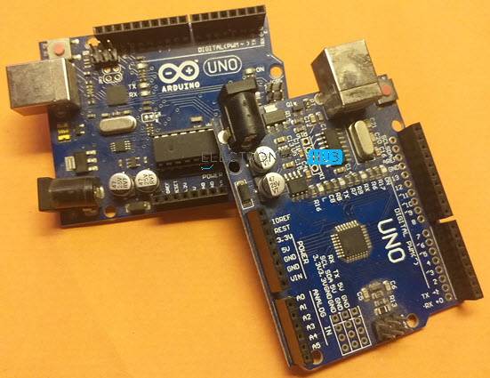
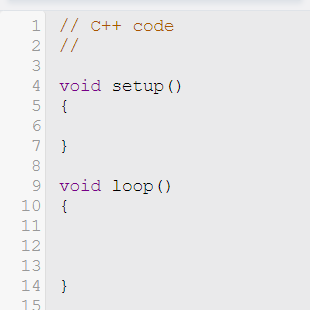
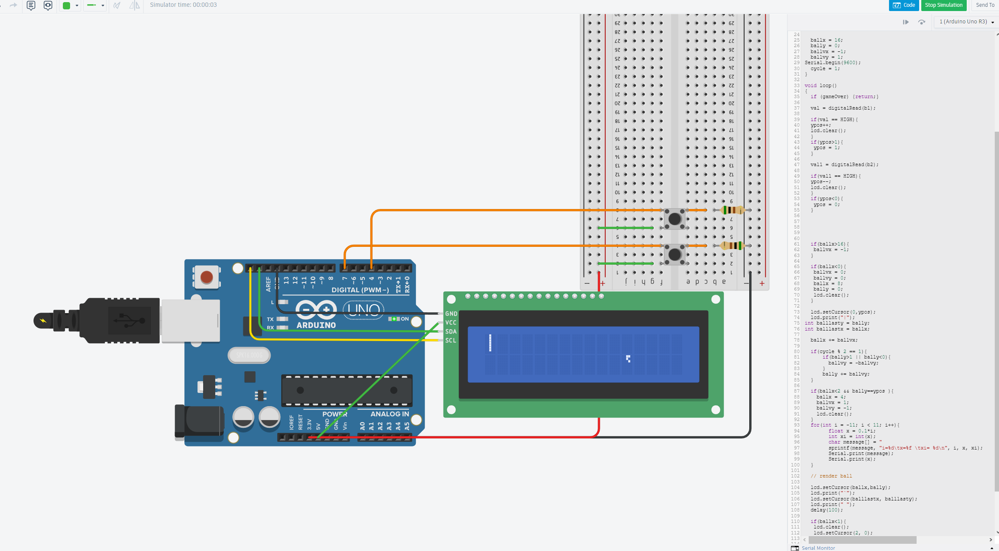
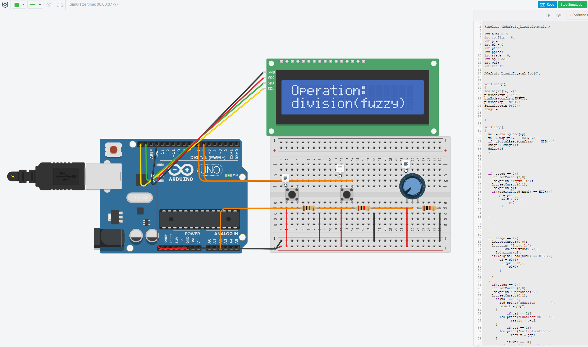

As it is the simplest to learn to use by far, the Arduino is the microcontroller of choice for this example project. If you don't feel like coughing up the 4-10$ for a solid board, you can follow along with an online emulator like wowki.com. The emulator used in the demonstrations is from Tinkercad for better visability, but functionality should be the same. To the right is a picture of an Arduino Uno in real life.

Begin by connecting wires to the 5th pin of your Arduino uno. As we can see in the pinout diagram in the Types and Info page, ping 5 is a digital output with Pulse Wave Management capabilties, meaning it can emulatate analog output. Connect the pin five wire to the positive annode of your LED. Connect the cathode of your LED to the ground of the Arduino. Grounding is a very important concept in circuitry, especially with microcontrollers. Improper grounding or using different grounds can result in junk data or damage to your microcontroller as there is always some amount of electrical noise and the microcontroller needs a single standard ground to work off of. Once this is completed, we can program our microcontroller.
Being specialized controllers, microcontrollers must be programmed before performing their functionality. For our purposes, we will use and integrated development environment (IDE) to program our Arduino. Arduino has their own IDE, but with extensions VScode can serve as one. For the demonstration, we will be using the mock-up IDE in the emulators, which does a fair job, if not for the console delays. To the right you will notice two C++ functions defined as default. These cannot be changed and are neccesary to the function of the Arduino. While the file says C++ code, and it is technically correct, there are so many specialized functions, extensions, and features included that it has a completely different feeling than normal c++ code, although all functionality is maintained, withing reason. It is intuitive and easy to pick up. The two default functions are main, run on startup, and loop, run every clock cycle. The file is pictured to the right
We can now populate our code. This is a simple project, just making an LED blink, but it is a good demo of the kind of work done with Arduino. Begin by declaring the pin mode of pin 5 as a digital output with the pinMode() function, and sending a HIGH signal to the pin with the digitalWrite() function, waiting 500 milliseconds with the delay() function, turning the pin off, then turning it on again after another 500 ms. This will run every clock cycle (with the delays each taking 500 ms worth of cycles). The result of Compiliing our code, plugging our Arduino into our computer, and uploading our code, is the LED blinking.
I, Leo Titievsky, Author of this work, personally use microcontrollers a lot. I have made many physical projects over the years, inlcuding a robot, an internet API interfacing animatronic, and a keychain that could run flappy-bird. While these projects are now no longer functioning or no longer in my posetion, I will always have access to my emulator files, and I'd like to share some more interesting ones below. Going left to right, the first is the worlds simplest functional pong-game, using a 2 * 16 liquid crystal display to power riveting two-position, 5 fps gameplay. This was later expanded on to normal pong with the use of a .96 inch IIC display, but I find the novelty of it charming. The second is a simple calculator made with potentiometers acting as selectors, and serves as a good demonstration of analog input, where signals taken in are percieved as an integer value on a scale as opposed to simply there or not.
This has been a fun and interesting project, and has served to reignite my interest in microcontrollers. More projects to come in the future.
 